Neuroimaging and Clinical AI
Developing multimodal models for MRI, clinical data, and neurological disease diagnosis.
Research Direction
I develop machine-learning models that connect MRI, EEG, clinical measurements, and behavioral data with neurological disease mechanisms and rehabilitation outcomes.
I'm a Research Assistant Professor at Peking University. My work focuses on AI and machine learning for biomedical data, especially neuroimaging, Alzheimer's disease diagnosis, stroke recovery prediction, and brain-computer-interface supported rehabilitation. Previously, I was a Postdoctoral Scholar in the Laboratory of NeuroImaging of Prof. Arthur W. Toga at the Keck School of Medicine, University of Southern California, where my research centered on developing and improving AI/ML models for biomedical data to better understand the mechanisms of Alzheimer's disease.
I received my Ph.D. at Tsinghua University in 2024, supervised by Prof. Linhong Ji. During my Ph.D., I was a Visiting Scholar at Harvard Medical School and the Laboratory for Translational Neurorecovery of David Lin, MD, at Massachusetts General Hospital in 2023. My Ph.D. thesis focused on designing and applying artificial intelligence methods to predict and uncover stroke patients' motor recovery based on neurological changes.
I earned my master's degree at George Washington University in 2020, supervised by Prof. Murray Loew at the Medical Imaging & Image Analysis Laboratory. My master's work focused on AI-based medical imaging for tumor segmentation.
Developing multimodal models for MRI, clinical data, and neurological disease diagnosis.
Designing interpretable learning frameworks that map predictions back to clinically meaningful signals.
Predicting rehabilitation response from EEG, biomechanics, behavioral measures, and corticomuscular coupling.
For the full citation record and newly indexed papers, visit Google Scholar.
Google Scholar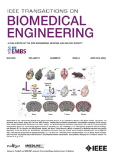
IEEE Transactions on Biomedical Engineering. A structured sparse coherence method for multivariate cortico-muscular analysis.
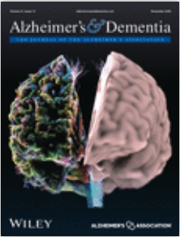
Alzheimer's & Dementia. A multimodal foundation-model framework combining MRI and clinical data for Alzheimer's disease diagnosis.
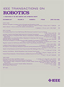
IEEE Transactions on Robotics. Bioinspired soft actuator design and modeling for high-force robotic applications.
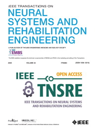
IEEE Transactions on Neural Systems and Rehabilitation Engineering. Explainable multimodal AI for predicting response to BCI-supported stroke rehabilitation.
IEEE Transactions on Neural Systems and Rehabilitation Engineering. Beta-band corticomuscular coherence as a biomarker of corticospinal integrity and motor recovery.
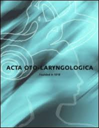
Acta Oto-Laryngologica. A facial image ROI framework for peripheral facial paralysis assessment.
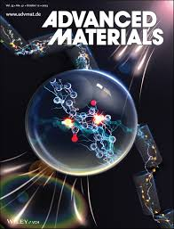
Advanced Materials. A smart soft pneumatic actuator-enabled robotic system for hand rehabilitation.
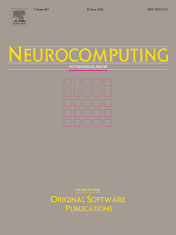
Neurocomputing. Multi-input EEG deep learning for stroke-patient task-state classification and model interpretation.
IEEE Transactions on Neural Systems and Rehabilitation Engineering. Multi-state EEG fusion for explainable BCI rehabilitation outcome prediction.
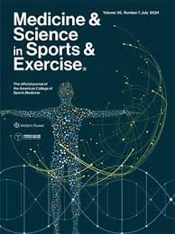
Medicine & Science in Sports & Exercise. A study of motor-respiratory coupling and endurance performance.
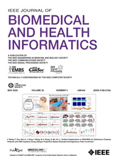
IEEE Journal of Biomedical and Health Informatics. A multiscale framework for functional corticomuscular coupling analysis.
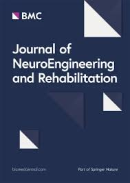
Journal of NeuroEngineering and Rehabilitation. EEG activation patterns after sensory stimulation in subacute stroke.
IEEE Journal of Biomedical and Health Informatics. Transferable prognosis modeling for stroke recovery across rehabilitation settings.
IEEE Transactions on Neural Systems and Rehabilitation Engineering. Early-session EEG prediction of BCI rehabilitation prognosis.
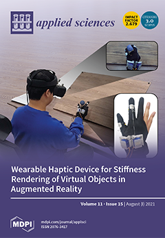
Applied Sciences. Robot-assisted quantitative assessment of upper-limb motor function.
The PDF opens directly in the browser's built-in PDF viewer.